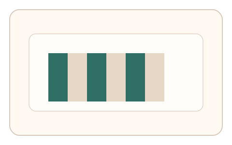
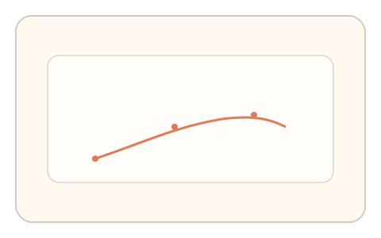

#128
D：单底座 × 单信号 × 自适应/短序列（视觉时域）
已扩展
对比恢复曲线
高对比适应后提升对比至刚可读，记录恢复曲线与调整速度。
概念原文
高对比暴露后逐步提升可读性，用户在“刚可读”处停下，记录对比恢复曲线并与个体基线比对。
利用对比适应回弹的个体差异。
研究背景
对比适应会暂时降低敏感度，恢复曲线存在个体差异。记录回弹轨迹可作为时域特征。
核心机制
- 呈现高对比纹理或文本进行适应。
- 切换到低对比目标并允许调节。
- 用户在“刚可读”处停下并重复。
- 记录恢复曲线与反应时。
用户流程
- 步骤 1：用户观看高对比适应刺激。
- 步骤 2：调节对比到刚好可读。
- 步骤 3：系统记录曲线并判定。
判定信号
对比恢复曲线
回弹速度与拐点具有个体差异。
调整速度与回拉
人类会出现轻微过冲与回拉。
判定逻辑
曲线需符合人类分布且存在合理回拉；过快或过稳判异常。
对抗面
- 脚本直接设定中值对比
- 重放历史调节路径
防御与缓解
- 随机化文本样式与背景纹理
- 加入噪声与遮罩降低读取
- 改变适应时长与对比阶梯
可达性与风险
提供大字号与高对比替代通道。
- 环境光导致可读性变化
- 屏幕校准差异影响阈值
可视化状态

状态 1：高对比适应
高对比纹理作为适应刺激。
状态 2：对比调节
将低对比内容调到刚可读。

状态 3：恢复曲线
记录对比恢复轨迹。
参考资料
Contrast adaptation
说明对比适应与敏感度变化。
Contrast sensitivity
说明对比度阈值。